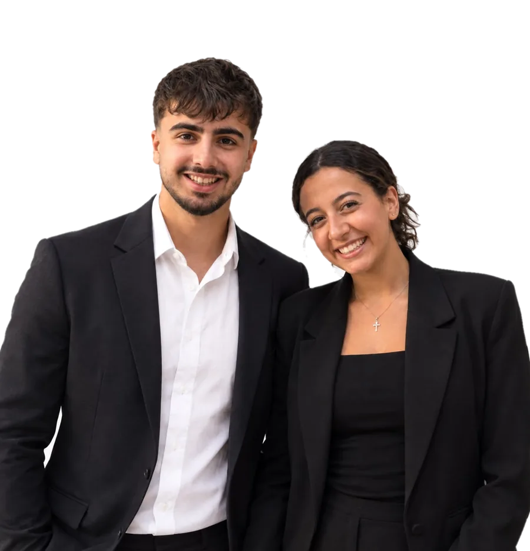

A student-run symposium about who the digital world leaves out. Three questions to find where you fit. Then ask our chatbot whatever you want.
Ask about the theme, the plan, or what you'd get out of joining. Real examples are its favourite.
Bosla is an AI, so it can get things wrong. For anything official, ask Jad or Kenzie.
Quick note: the prize pool and partnerships are goals the team works on after the vote, and that's when roles get chosen too.
Vote Jad + Kenzie
A student campaign page for the 2027 Tomorrow's Leaders Annual Symposium chair election at AUC. Nothing here is an official TL announcement.